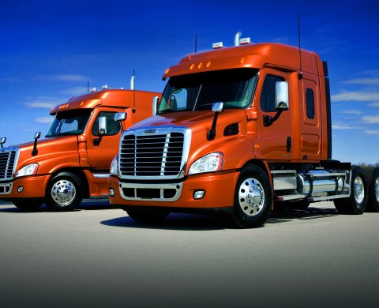

Clockwork Trucking, Inc.
Our strategic vision is to be the leader in solutions development and execution in the temperature controlled LTL and truckload markets, logistics markets, and in dedicated service offerings across all modes. We will leverage our core competencies across our enterprise to provide our customers with the highest levels of service at competitive values.
Our team will work in a collaborative manner to exceed the expectations of our customers and shareholders and deliver our value proposition on a day in and day out basis. We will strive to deliver a customer experience of the highest level and perform with honesty, integrity, and a sense of urgency to deliver on what we promise.